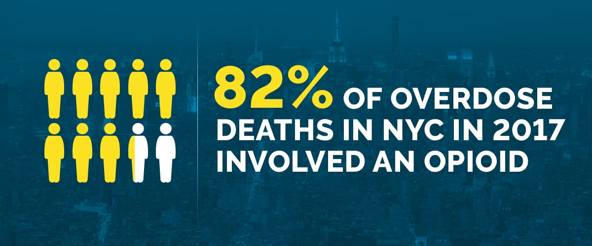

The opioid epidemic is a national crisis. Every day in the U.S., more than 130 people die from an opioid overdose. The importance of finding a solution to the opioid epidemic is indisputable.
In this project, we aim to explore trends in the opioid crisis from a demographic standpoint, as well as to investigate the effectiveness of different public health and policy efforts. Through this data-grounded exploration, we hope to elucidate the role that public health can play in alleviating the epidemic.
We explore 4 datasets, detailed below, for our analyses regarding the opioid crisis in NY specifically.
How do opioid deaths change over time in the following categories:
Race
Age
Gender
Rural/Urban
How does the type of insurance a person has relate to the number of opioid-related facility visits?
How do opioid related treatment visits and deaths differ by county?
How do the number of pills prescribed differ by county over time?
We found several interesting demographic patterns and other trends in our data. 45-54 year olds had the largest number of deaths from 2003 to 2013. However, from 2014 to 2017, 25-34 year olds have seen a sharp increase in death count, surpassing 45-54 year olds by a large margain.
We find that death counts by race/ethnicity have maintained a very similar distribution from 2003 to 2013. Whites have by far the largest number of deaths, followed by Hispanic and Black populations.
From 2003 to 2013, men have double or more the number of deaths as compared to females. Death counts among men have grown exponentially since 2014, while female numbers have remained relatively similar.
There is not a distinct difference between opioid death rate per 10,000 in rural vs urban communities. However, we do see a slight increasng trend in urban deaths between 2010 and 2012.
Suffolk county consistently has the highest number of opioid related treatment visits, and number of pills prescribed. When adjusted for population size, Sullivan county has the highest rate of opioid-related death.
Interested in knowing more about the analysis we have performed? You can find more detailed information about Opioid use demographics on this link, and you can see some related trends here.
If you are interested in some statistical learning and clustering related to opioid death, Er visits, and number of pills in different counties, you can navigate to this page
We have also provided a report of our study here.
OR
You can just take a look at our 2 minutes project screencast and not look any further!